Make it do one thing
Start from a working template or write a short Python or Node script. Declare packages by name; they install on the first run.
Self-hosted MCP tool workspace
Write a Python or Node script, test it with JSON and publish it as an MCP tool from one self-hosted container. Save it, and your AI client can call it on its next tool refresh.
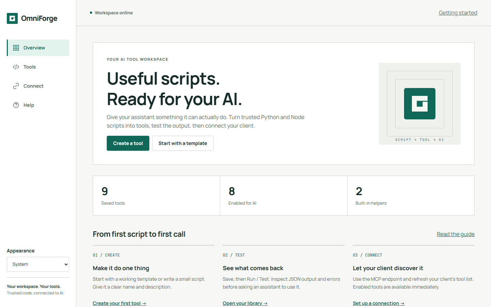
How it works
A tool is a named script. When an AI client calls it, OmniForge passes the arguments as one JSON object on stdin, runs the script and returns whatever it prints.
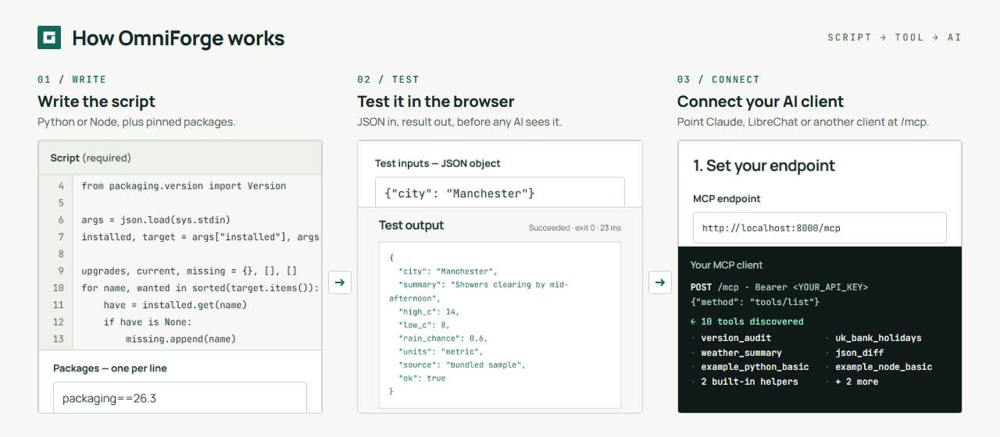
Start from a working template or write a short Python or Node script. Declare packages by name; they install on the first run.
Save, then Run / Test with a JSON input. Check stdout, stderr, the exit code and the timing before an assistant ever uses it.
Point your MCP client at /mcp and refresh its tool list. Enabled tools are available straight away, with no restart.
Features
Overview, Tools, Tool studio, Connect and Help, designed for people who have never set up an MCP server.
Python 3.12 and Node.js (CommonJS). Arguments arrive on stdin and are never put through a shell.
Run the saved version with JSON inputs and see stdout, stderr, the exit code and the duration. Stale results are clearly labelled.
Up to 50 pip or npm packages per tool, installed on the first run into a persistent per-tool cache. Wheels only, with no install scripts.
JSON Schema Draft 2020-12 with local references only, checked before any code runs.
omniforge_instructions and omniforge_create_tool let an AI client learn the contract and save tools without running them.
Content revisions with If-Match stop a stale tab from overwriting, deleting or testing a changed tool.
Light, dark and system themes, a phone layout and an offline reconnect page. Code and results are never cached.
Runs as UID 1000 and works with a read-only root, a noexec /tmp and all capabilities dropped. No Docker socket needed.
Security model
OmniForge is a workspace for trusted people on a trusted network. It isn't a public or isolated code-execution service, and these limits are also shown in the product itself.
Anyone who can reach the port can read, change and run every tool. Every tool can read everything the app can, including its MCP key.
GET /mcp is unauthenticated too.OMNIFORGE_API_KEY, and can reach its data and network.POST /mcp. It's never returned by any route.textContent-only dashboard and parameterised SQL.Quick start
You'll need Docker on an amd64 host. Generate a key with openssl rand -hex 32, then:
docker run
docker run -d --name omniforge \
-p 8000:8000 \
-e OMNIFORGE_API_KEY='<your-random-key>' \
-v omniforge_data:/opt/omniforge/data \
-v omniforge_lib:/opt/omniforge/lib \
--restart unless-stopped \
dbzocchi/omniforge:latestcompose.yaml
services:
omniforge:
image: dbzocchi/omniforge:latest
ports: ["8000:8000"]
environment:
OMNIFORGE_API_KEY: ${OMNIFORGE_API_KEY:-}
volumes:
- omniforge_data:/opt/omniforge/data
- omniforge_lib:/opt/omniforge/lib
restart: unless-stopped
volumes:
omniforge_data:
omniforge_lib:Open http://localhost:8000, choose Start with a template, then Save tool and Run / Test. Only latest is published, so pin by digest for reproducible deploys. Installation options, including Unraid and hardening →
Connect clients
OmniForge accepts JSON-RPC over POST /mcp (initialize, tools/list, tools/call, ping) with an optional Bearer key. Client compatibility isn't verified by the project, so check yours with a tools/list first.
Claude Code
claude mcp add --transport http omniforge \
http://your-host:8000/mcp \
--header "Authorization: Bearer <YOUR_API_KEY>"LibreChat · librechat.yaml
mcpServers:
omniforge:
type: streamable-http
url: http://your-host:8000/mcp
headers:
Authorization: "Bearer ${OMNIFORGE_API_KEY}"Any HTTP client
curl -s http://your-host:8000/mcp \
-H 'Content-Type: application/json' \
-H 'Authorization: Bearer <YOUR_API_KEY>' \
-d '{"jsonrpc":"2.0","id":1,
"method":"tools/list","params":{}}'Claude Desktop reaches HTTP servers through a stdio bridge such as mcp-remote. Every configuration is in the connection guide.
Gallery
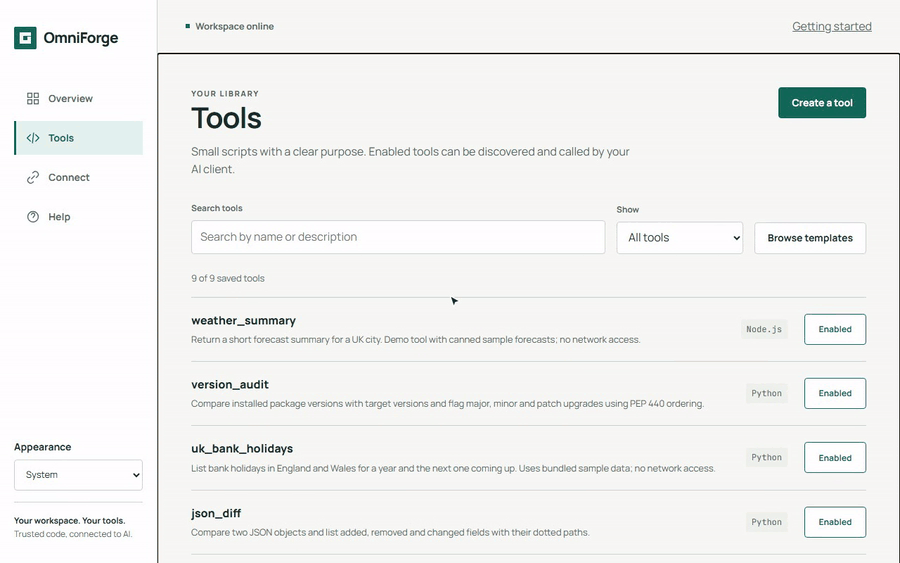
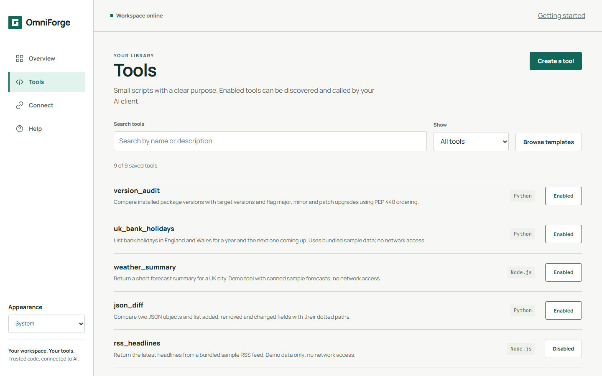
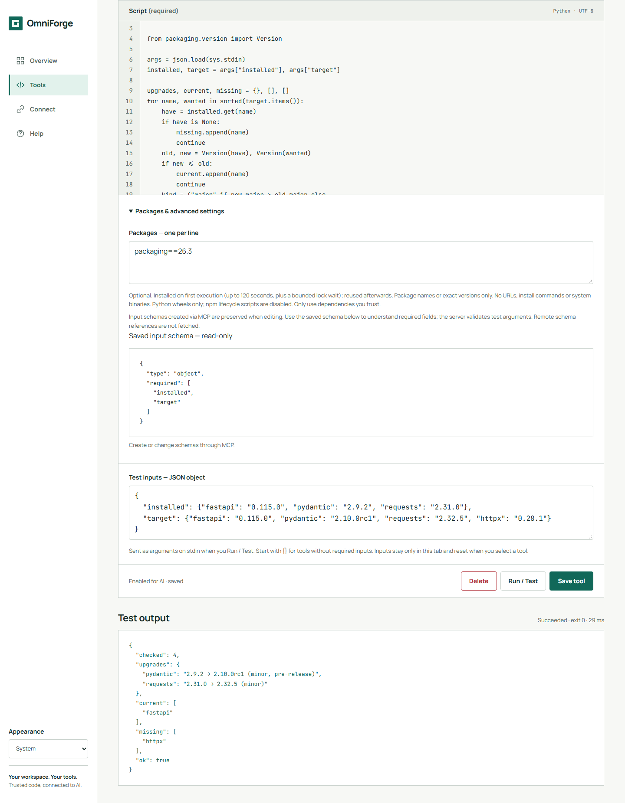
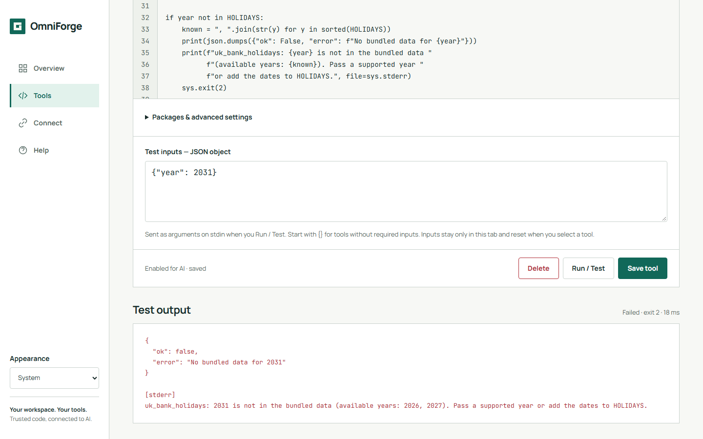
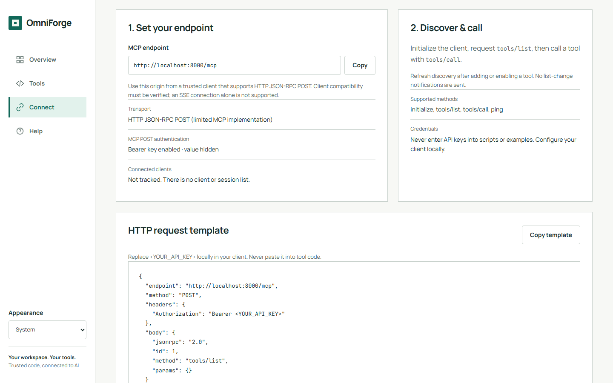
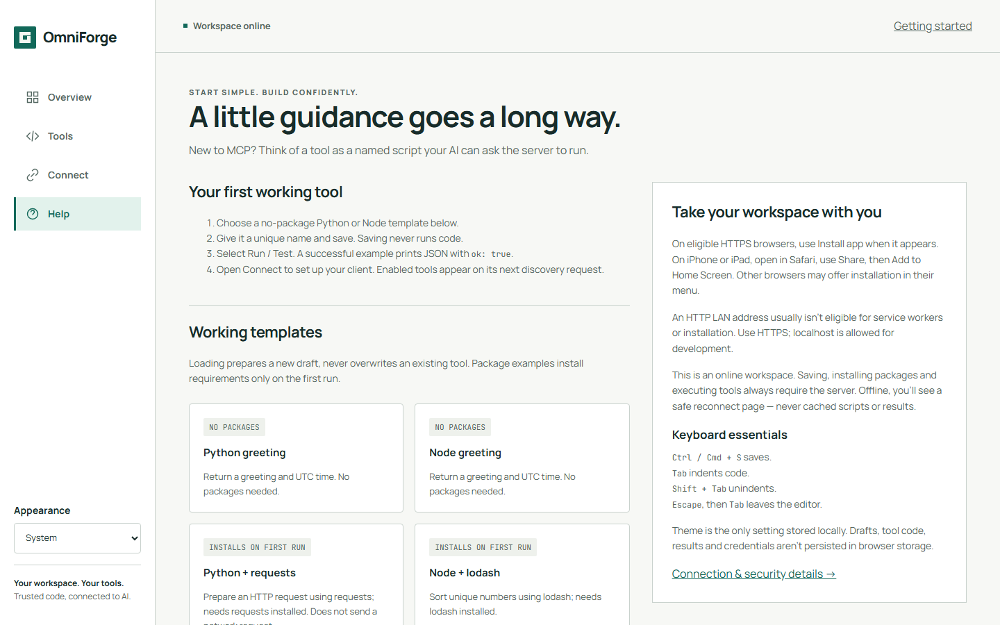
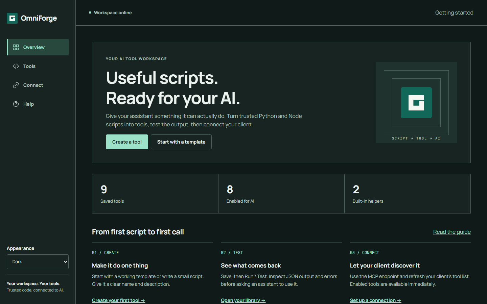
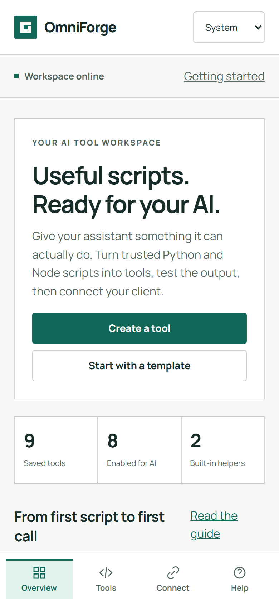
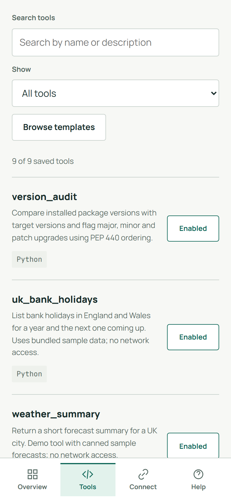
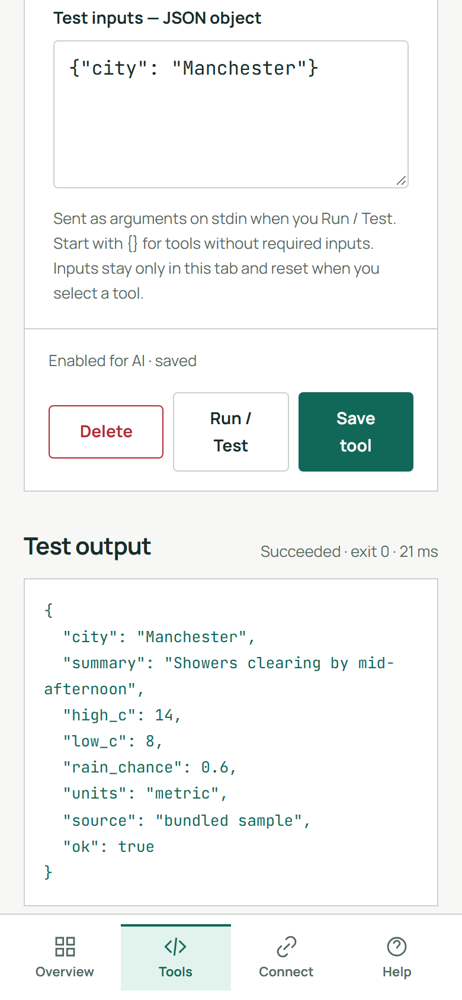
Documentation
Task-based guides for first-timers, plus a full reference. Start at the documentation home.